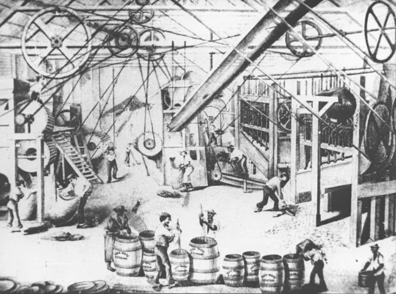
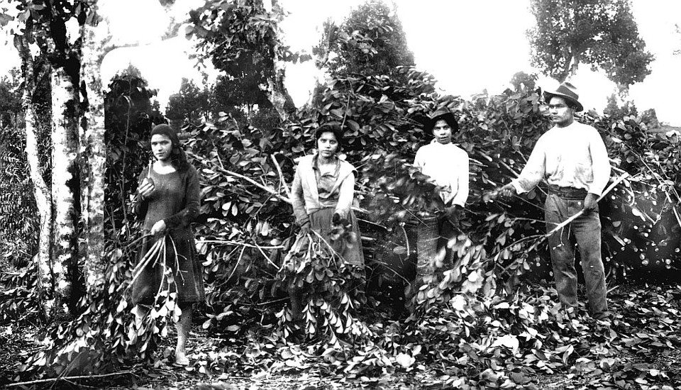
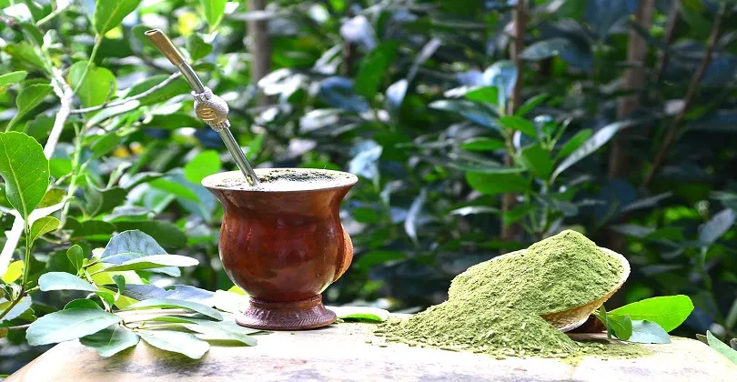

Como a Erva-Mate Moldou a História e as Cidades do Paraná
Muito além do tradicional chimarrão, a erva-mate foi o verdadeiro "ouro verde" e o principal motor econômico, social e cultural do Paraná entre os séculos XIX e XX. Nesta apresentação, veremos como o conhecimento ancestral dos povos Guarani e Kaingang deu origem ao comércio da planta e como a riqueza desse setor garantiu o suporte financeiro para a emancipação política do Paraná em 1853. Também descobriremos como o transporte da erva motivou grandes obras de infraestrutura, como a Estrada da Graciosa e a Ferrovia Paranaguá-Curitiba, impulsionando o crescimento de diversas cidades e deixando um legado cultural vivo até hoje. Sejam bem-vindos a essa viagem pelas raízes da nossa história!

Tradição e Progresso: A Trajetória da Erva-Mate no Parana
A erva-mate desenvolveu-se no Paraná a partir do século XVI, atingindo seu auge econômico entre 1820 e 1930. O processo começou no Planalto Paranaense, em cidades como São Mateus do Sul, Lapa e Palmeira, com a assimilação dos saberes dos povos Guarani e Kaingang pelos colonizadores. A planta, que antes era consumida apenas localmente, transformou-se em uma valiosa mercadoria de exportação. Para escoar a produção até o Litoral, nos portos de Paranaguá e Antonina, o transporte evoluiu das tropas de mulas para grandes obras como a Estrada da Graciosa e a Ferrovia Paranaguá-Curitiba. Todo esse movimento concentrou o beneficiamento e as finanças em Curitiba, gerando a riqueza necessária para a emancipação política do estado em 1853 e impulsionando a urbanização da região..

O Símbolo de um Povo
A erva-mate é o alicerce da cultura do Paraná. O hábito ancestral do chimarrão, herdado dos povos Guarani e Kaingang, transformou-se no principal símbolo de hospitalidade e união do estado. Além disso, o transporte e a produção da folha moldaram o estilo de vida tropeiro, inspiraram lendas locais e influenciaram a culinária, a arquitetura e os símbolos da identidade paranaense.
